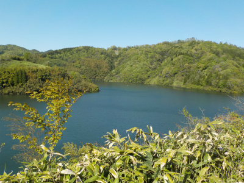
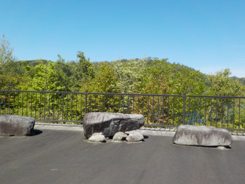
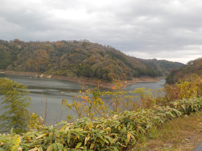
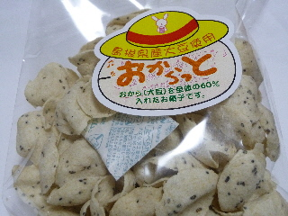
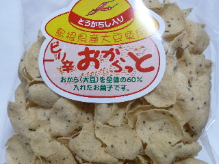
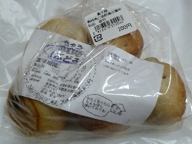
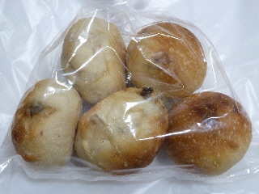
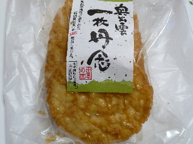

おろちの里付近の木が成長してました。
2023/04/30

奥出雲町に行く途中に、おろちの里で休憩しました。
おろちの里近くは湖がよく見えていい景色でした。

おろちの里からちょっと歩いた場所では木が成長していました。
もっと大きくなって、花や木の実が沢山付くといいなと思いました。
売店で小さい鯖寿司と海苔巻きのセットを買って食べました。鯖寿司に入っているシバ漬けがいいアクセントになっていて美味しかったです。
島根県雲南市木次町北原1603
2023/04/30

奥出雲町に行く途中に、おろちの里で休憩しました。
おろちの里近くは湖がよく見えていい景色でした。

おろちの里からちょっと歩いた場所では木が成長していました。
もっと大きくなって、花や木の実が沢山付くといいなと思いました。
売店で小さい鯖寿司と海苔巻きのセットを買って食べました。鯖寿司に入っているシバ漬けがいいアクセントになっていて美味しかったです。
2018/11/18
道の駅で餅つき＆販売をやっていました。
つき終わったタイミングできなこ餅を注文して食べました。

秋の景色を見ながらお餅を食べました。
出来たてのお餅は美味しかったです。
2014/05/11
道の駅おろちの里で買い物しました。

おからっと（108円）です。
他の観光地でも販売している商品ですが、見つけたら買います。
おからのスナックで、あっさり味。ちょっと固めの歯ごたえです。

こっちら辛いバージョンです。でもそんなに辛くはないです。
お手頃価格のヘルシーなスナックですね。こうゆうのが各地のお土産であるといいんだけどな。
2012/04/14
おろちの里で買しました。おろちの里って木次町なんですね。奥出雲町かと思っていました。

ぱんやの”きゅう”の小まる（ぶどう）です。 奥出雲町のパン屋さんのようです。

自家製酵母のパンで、少し固めです。干しぶどうが多めなので、ちょっとずつ味わいながら食べました。
自家製酵母のパンが200円はなんかお得な気分がします。

奥出雲のお煎餅もありました。ＪＡさんが作っているみたいです。
大きいお煎餅で、バリバリ食べる感じが好きだなって思いました。味も美味しかったです。
5枚400円と、おやつには高い気がしますが、これだったらこの値段出してもいいかなと思いました。
道の駅はいろんなものがあっていいですね。